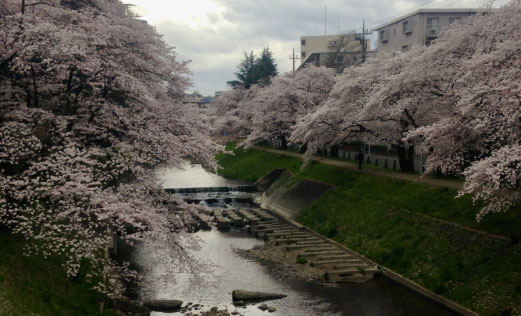
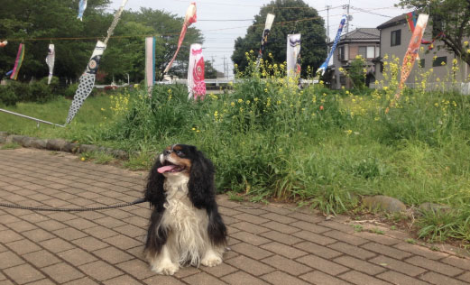

-
5.入間、そして狭山の魅力とは─。
狭山と入間の良さは、それぞれ違います。入間の良さも狭山の良さも、日常で感じることが多いです。カフェをやっていて思ったのは、入間は意外と外から越してこられた方が多く、東京から来た方や、関西からお嫁に来た方という方もいらっしゃり、結構オープンだと思います。市の主催で、珍しいイベントなども開催したりと新しいことに挑戦している感じがします。マンションも多いんです。

狭山は地主さんが多いようで、その土地に根ざした考え方で、どう狭山を盛り上げていくか、良くしていくかと奮起しています。最近は狭山にも、チェーン店ではない規模のお店が増えてきて、狭山市駅や新狭山駅、入曽駅の周辺でマルシェが開かれるようになりました。最近は住宅も増えてきて、以前に比べ住民が増えて賑わってきています。霞川沿いの見事な桜並木(入間市)
※写真提供Ke-yaki Kitchen入間も狭山も20年前に比べるとだいぶ変わりました。うちの最寄りの入曽駅も工事が始まり、新しくなります。素朴さが嬉しい狭山ですが、そんな一面も残しつつ暮らしやすい街へと日々進化しています。
不老川沿いでスパイクとこどもの日を祝った際のお写真(狭山市)
※写真提供Ke-yaki Kitchen -
霞川沿いの見事な桜並木(入間市)
※写真提供Ke-yaki Kitchen不老川沿いでスパイクとこどもの日を祝った際のお写真(狭山市)
※写真提供Ke-yaki Kitchen